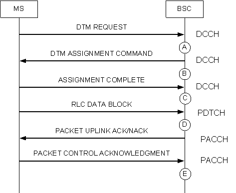
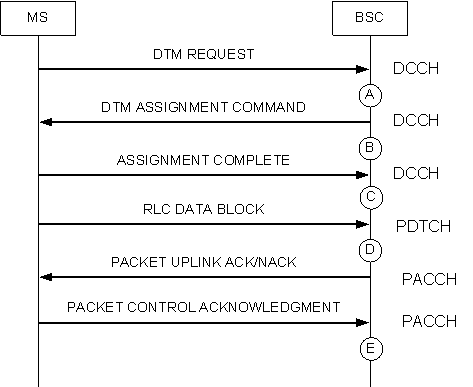

Measurement Counter
A9801: DTM_DCCH_UPLINK_DTM_REQUEST
Description
This measurement provides the number of uplink DTM request messages sent on the DCCH.
Unit
Integer number or integer.
Measurement Point
There are two types of DTM requests on the DCCH: DTM request in the case of no channel reassignment, as shown in Figure 1, and DTM request in the case of channel reassignment, as shown in Figure 2. After the BSC receives the DTM REQUEST message from the MS (see measurement point A), the counter is incremented by one.
Figure 1 DTM access procedure in the case of no channel reassignment

Figure 2 DTM access procedure in the case of channel reassignment


Formula
This is an original counter without involving any formula.